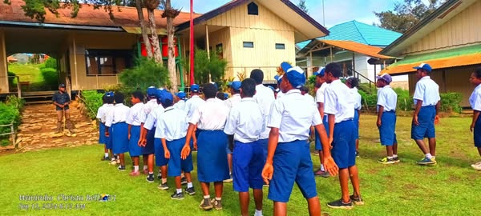

Momen Pada sahat Bari Di lapangan, Degar Pegumuman dari Guru.
.jpg)
Poto siswa/i Keadaan Baris di lapanga megadap kedepa degar pegumuman dari guru-guru.
Sebuah momen indah berada di alam bebas, siswa medengar pegumuman dari haraan guru-guru.
poto siswa/i keadan baris di lapangan ambil gambarnya dari samping kiri.

Ruangan guru untuk Merancang atau diskusi Program-Program Sedang berjalan.

Ruangan LAB kusus Untuk praktek

Momen kegiatan sekolah bakar batu selesai degar hasil ujian.
Kegiata sosialisasi Guru dengan orang tua wali.

Poto padasahat siswa/i dalam barisan megadap kedepan medengar haraan dari guru-guru.

Ibadah injil masuk SDN 1 & SMP NEGERI 1 PIRIME Gabung 5 Feb/2025.
siswa/i dapat suru bawa kayu bua untuk bikin pagar sekolah.

siswa/i dapat suru bawa kayu bua untuk bikin pagar sekolah mereka berpakaian kostum biru.

Foto didalam ruangan kelas siswa/i sedang meendengar kebsek pegumuman.

Ibadah injil masuk SDN 1 & SMP NEGERI 1 PIRIME Gabung 5 Feb/2025.

Ruangan LAB kusus untuk siswa/i praktek .
Momen sosialisasi Guru dengan Orang Tua wali.